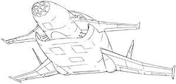

| Depp Rog |
|
|  | |
General and Technical Data |
|
|
Unit Type: heavy high-altitude bomber Dimensions: overall length 33.5 meters; overall width 31.5 meters Armament: bombs, guided and unguided, various ordinances; 6 x long-range air-to-air missile |
|
| Technical and Historical Notes | |
|
Though it is one of the oldest units still in service by the Earth Federation (humbled only by the ancient Mongoose), it is still one of the most effective. In the tradition of the NATO's B-52 "Buff" strategic bomber, the Depp Rog can deliver virtually any type of dropped ordinance in the Federal arsenal.
Unlike the Fly Manta, which is mostly intended for light, fast attacks, the Depp Rog is a serious heavy-hitter. Designed for high altitude bombing raids, the Depp Rog carries an extensive arsenal of weaponr, including GBU, JDAM, and laser-guided bombs, atmospheric explosives, cluster munitions, and other such ordinances. It is also armed with half a dozen standoff missiles for long-range attack against enemy aircraft. However, it has no point-defense weapons, and must rely on escort planes to fend off any enemy aircraft that can close with it and engage at short range. Though its technology is ancient, the Depp Rog's "rolling thunder" style of attack is a tried and true method that has yet to be trumped by any conventional means. "If it ain't broke, don't fix it." It also serves as a psycological weapon as well. Though a Gaw's gigantic size is intimidating as it is, the telltale contrails of a Depp Rog's high altitude attack runs are a sight of their own, especially when seen from the ground. |
 RPG quick stats sheet
RPG quick stats sheet